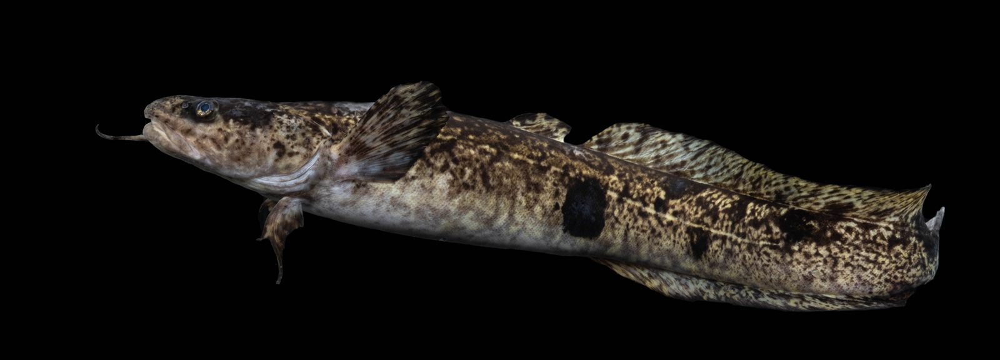

Rozpoznawanie i biologia
Wygląd i cechy rozpoznawcze
Miętus (Lota lota) to jedyny słodkowodny przedstawiciel rodziny dorszowatych — jego kuzynami są dorsz, nawaga czy plamiak. Najbardziej charakterystyczną cechą jest pojedynczy wąsik na brodzie, dokładnie taki, jaki znamy u dorsza, oraz para krótkich wąsików przy nozdrzach. Ciało jest wydłużone, w przekroju niemal okrągłe z przodu i bocznie spłaszczone w części ogonowej, pokryte bardzo drobną łuską głęboko osadzoną w grubym, śliskim śluzie — stąd wrażenie „nagiej”, węgorzowatej skóry. Ubarwienie marmurkowe: oliwkowobrązowe tło z ciemnymi, nieregularnymi plamami. Ma dwie płetwy grzbietowe — pierwszą krótką, drugą bardzo długą, ciągnącą się aż do ogona, podobnie jak płetwa odbytowa. Z niczym nie sposób go pomylić; przeciętne ryby mierzą 30–45 cm, a w dużych, chłodnych wodach trafiają się okazy ponad 70 cm.
Środowisko i występowanie w Polsce
Miętus jest zimnolubny — optimum termiczne ma poniżej 15°C, a w cieplejszej wodzie zapada w letarg. Zasiedla chłodne, dobrze natlenione rzeki praktycznie wszystkich krain — od potoków pstrągowych po dolne odcinki dużych rzek — oraz głębokie, zimne jeziora, zwłaszcza na pojezierzach. W Polsce występuje szeroko, choć nierównomiernie: spotkamy go w Wiśle i Odrze oraz ich dopływach, w rzekach pomorskich i pojeziernych, a także w głębokich jeziorach mazurskich. Dzień spędza w kryjówkach: pod kamieniami, w podmytych brzegach, wśród zwalonych drzew, w norach i rynnach, skąd nocą wyrusza na żer. Liczebność miętusa spadła w wodach silnie przekształconych i ocieplonych, dlatego część okręgów wprowadziła dla niego osobne formy ochrony, a w niektórych krajach Europy Zachodniej gatunek niemal wyginął.
Biologia i tarło — zimą pod lodem
Tarło miętusa to ewenement wśród naszych ryb: odbywa się w środku zimy, zwykle od grudnia do lutego, przy temperaturze wody 0–4°C, często pod pokrywą lodową. Ryby gromadzą się nocą na płytkich, żwirowych lub piaszczystych odcinkach, gdzie tarlaki splatają się w charakterystyczne kłęby. Samica jest niezwykle płodna — składa od kilkuset tysięcy do ponad miliona drobnych ziaren ikry, które rozwijają się wolno w lodowatej wodzie. Wylęg pojawia się przedwiosennie i początkowo odżywia się planktonem. Miętus dojrzewa płciowo w wieku trzech do czterech lat i rośnie powoli, szczególnie w ubogich wodach. Ta odwrócona rytmika życiowa — aktywność zimą, letarg latem — jest spadkiem po zimnolubnych przodkach i czyni miętusa naturalnym „nocnym zmiennikiem” innych drapieżników.
Żerowanie według pór roku
Kalendarz miętusa jest odwrotnością kalendarza większości ryb. Szczyt żerowania przypada na późną jesień, zimę i przedwiośnie — od października do marca — z najintensywniejszymi okresami tuż przed tarłem i zaraz po nim. Żeruje niemal wyłącznie nocą; najlepsze bywają pierwsze dwie, trzy godziny po zmroku oraz pora przed świtem, a pochmurne, wietrzne, wręcz paskudne noce uchodzą za lepsze niż mroźne i rozgwieżdżone. Dorosły miętus to drapieżnik i padlinożerca: zjada małe ryby (ukleje, kiełbie, jazgarze), ikrę innych gatunków, raki, larwy i resztki denne, polując powoli, „węchem i dotykiem” przy samym dnie. Wiosną aktywność stopniowo spada, a latem, gdy woda przekroczy kilkanaście stopni, miętus zaszywa się w najchłodniejszych kryjówkach i żeruje sporadycznie — letnie połowy są możliwe głównie w zimnych rzekach górskich i głębokich jeziorach. Jak zawsze, to tylko statystyka, nie obietnica brań.
Przepisy i połów
Wymiar, okres ochronny i limit — orientacyjnie
Przepisy dotyczące miętusa są wyjątkowo zróżnicowane regionalnie, dlatego podajemy je wyłącznie orientacyjnie. Wymiar ochronny wynosi zwykle 25–30 cm zależnie od okręgu i typu wody. W części wód — zwłaszcza w niektórych rzekach i okręgach — obowiązuje okres ochronny od 1 grudnia do końca lutego, chroniący zimowe tarło, ale są też wody, gdzie miętusa wolno łowić zimą bez ograniczeń czasowych. Limit dobowy również zależy od okręgu: od kilku sztuk po brak osobnego limitu. Ten gatunek to wręcz podręcznikowy przykład, dlaczego nie wolno polegać na ogólnych tabelach: zanim wybierzesz się na nocną zasiadkę, sprawdź aktualne zezwolenie swojego okręgu PZW, regulamin konkretnej wody (w wodach górskich łowiska specjalne mają osobne regulaminy) oraz informacje na pzw.org.pl. Pamiętaj też o lokalnych zasadach dotyczących samego wędkowania w nocy.
Metody i przynęty
Klasyka to gruntówka nocą: prosty, mocny zestaw z ciężarkiem przelotowym lub bocznym trokiem, przyponem 25–40 cm i pojedynczym hakiem nr 4–8. Najlepsze przynęty to martwa rybka lub jej kawałek (ogon uklei, filet z płotki), pęczek rosówek oraz — tam, gdzie regulamin na to pozwala — wątróbka drobiowa; miętus lokalizuje pokarm węchem, więc liczy się wyrazisty zapach. Sygnalizacja brań po ciemku: dzwoneczki, świetliki na szczytówce lub sygnalizatory elektroniczne. Coraz popularniejszy jest też zimowy spinning nocny — małe gumy i cykady prowadzone wolno, ze stukaniem o dno — oraz podlodowa mormyszka z kawałkiem rybki na jeziorach, oczywiście tylko tam, gdzie połów spod lodu i nocą jest dozwolony. Miętus bierze pewnie i głęboko, dlatego nie zwlekaj z zacięciem i miej przy sobie długie szczypce do odhaczania.
Taktyka nocnej zasiadki
Miejscówkę wybieraj za dnia: szukaj twardego dna, rynien za główkami i ostrogami, wylotów dopływów, granic prądu i spokojnej wody oraz okolic zwalonych drzew i kamienistych umocnień brzegowych — nocą miętusy wychodzą z takich kryjówek na pobliskie płycizny. Stanowisko przygotuj przed zmrokiem: wygodne siedzisko, rozłożony sprzęt, zapas przyponów, czołówka z czerwonym światłem, termos i ubranie zdecydowanie cieplejsze, niż podpowiada rozsądek — to wędkarstwo, w którym zimno kończy zasiadkę szybciej niż brak brań. Wystaw dwie wędki (jeśli zezwolenie na to pozwala) na różnych dystansach i co 30–40 minut przemieszczaj zestawy, bo miętus żeruje punktowo i powoli patroluje dno. Brania przychodzą falami — często seria kilku ryb w krótkim oknie, a potem cisza. Wszelkie zasady bezpieczeństwa nad zimową wodą, zwłaszcza przy lodzie, traktuj bezwzględnie priorytetowo.
Rekordy Polski — orientacyjnie
Rekordowe polskie miętusy przekraczały 70–80 cm i ważyły w okolicach 3–4 kg; największe okazy pochodziły z dużych rzek i głębokich jezior północnej Polski. Dla porównania — w Skandynawii i na Syberii, gdzie gatunek ma idealne warunki termiczne, łowiono miętusy ponad metrowe i ważące po kilkanaście kilogramów. W krajowych realiach ryba 50-centymetrowa to bardzo dobry wynik, a 60 cm — prawdziwy okaz. Wartości rekordowe podajemy orientacyjnie: oficjalne rejestry prowadzą czasopisma wędkarskie, a wiele wybitnych miętusów nigdy nie zostało zgłoszonych, bo łowiono je nocą, przy okazji, bez świadków i wagi.
Kulinaria i podejście do zasobów
Mięso miętusa jest białe, zwięzłe i niemal pozbawione ości — przez wieki uchodziło za przysmak, a wątroba miętusa, duża i tłusta jak u dorsza, była rarytasem staropolskiej kuchni; tradycyjna jest też zupa miętusowa. Jeżeli zabierasz rybę w granicach wymiaru i limitu, uśmierć ją natychmiast i sprawnie, pamiętając o bardzo śliskiej skórze. Warto jednak zachować umiar: w wielu wodach miętus jest dziś znacznie rzadszy niż przed dekadami, a jako gatunek zimnolubny należy do pierwszych ofiar ocieplania się rzek. Ryby niewymiarowe i tarlaki złowione tuż przed tarłem wypuszczaj szybko i ostrożnie — głęboko połkniętego haka lepiej odciąć przy przyponie, niż wyrywać. Rozsądny wędkarz traktuje miętusa jak dobro ograniczone, nie jak niewyczerpany zapas.
Ciekawostki
Miętus jest reliktem epoki lodowcowej — jego rozmieszczenie wokółbiegunowe obejmuje północ Europy, Azji i Ameryki Północnej, a u nas zachował się dzięki chłodnym rzekom i głębokim jeziorom. Jako jedyna nasza ryba trze się zimą, dzięki czemu jego wylęg unika konkurencji pokarmowej z narybkiem innych gatunków. Wąsik na brodzie pełni funkcję czuciowo-smakową i pozwala odnajdywać pokarm w całkowitych ciemnościach. Dawniej miętusy łowiono na Mazowszu i Podlasiu „na sztych” — rękami spod kamieni i podmytych brzegów; dziś takie metody są zabronione. W niektórych krajach zachodniej Europy gatunek wyginął lokalnie i jest przedmiotem programów restytucji, podczas gdy w Skandynawii wciąż prowadzi się jego regularne połowy podlodowe.
FAQ — najczęstsze pytania
Czy miętusa można pomylić z węgorzem lub sumem?
Na pierwszy rzut oka śliskie, wydłużone ciało może przypominać węgorza, ale różnice są wyraźne: miętus ma pojedynczy wąsik na brodzie, dwie oddzielne płetwy grzbietowe i marmurkowe ubarwienie, podczas gdy węgorz ma jednolity ciemny grzbiet i jeden ciągły fałd płetwowy. Od sumika karłowatego i suma odróżnia go liczba wąsów — sumowate mają ich kilka par wokół pyska, miętus tylko jeden brodowy i dwa drobne przy nozdrzach. Rozpoznanie ma znaczenie praktyczne, bo każdy z tych gatunków podlega innym przepisom.
Kiedy najlepiej łowić miętusa?
Statystycznie najlepsze są noce od późnej jesieni do przedwiośnia, zwłaszcza pierwsze godziny po zmroku przy pochmurnej, niewyżowej pogodzie; wielu wędkarzy ceni okresy tuż przed tarłem i tuż po nim. Trzeba jednak pamiętać, że w części wód od 1 grudnia do końca lutego obowiązuje okres ochronny — wtedy łowienie miętusa jest tam zabronione niezależnie od jego aktywności. Sprawdź przepisy swojego okręgu, zanim zaplanujesz zasiadkę. Latem połowy są możliwe głównie w zimnych rzekach, ale wyniki bywają wyraźnie słabsze.
Czy w nocy wolno wędkować?
Ogólne zasady PZW dopuszczają wędkowanie nocne na większości wód, ale pod warunkami: stanowisko musi być oświetlone, a część okręgów i łowisk (zwłaszcza specjalnych wód górskich) ogranicza lub zabrania połowów nocnych. Bywa też, że nocne łowienie wymaga odrębnej adnotacji w zezwoleniu. Dlatego przed nocną wyprawą na miętusa przeczytaj regulamin okręgu i opis konkretnej wody — to częsty punkt kontroli Straży Rybackiej.
Dlaczego latem miętus nie bierze?
Bo fizjologicznie nie jest w stanie normalnie funkcjonować w ciepłej wodzie. Powyżej około 15–18°C jego metabolizm ulega zaburzeniu, więc ryba chowa się w najchłodniejszych miejscach — głębokich rynnach, wypływach wód gruntowych, pod korzeniami — i niemal nie pobiera pokarmu. To nie kwestia złej przynęty czy techniki, tylko biologii gatunku. Sezon na miętusa zaczyna się wraz z jesiennym ochłodzeniem wody i to wtedy warto planować wyprawy.
Źródła i weryfikacja
Treści mają charakter przeglądowy i edukacyjny. Wymiary, okresy ochronne i limity dla miętusa są wyjątkowo zróżnicowane między okręgami — podane wartości oparto na ogólnych zasadach PZW na dzień publikacji i mają charakter wyłącznie orientacyjny. Zweryfikuj je w aktualnym zezwoleniu, regulaminie okręgu i na pzw.org.pl; w wodach górskich obowiązują osobne regulaminy łowisk specjalnych. Artykuł nie gwarantuje wyników połowu.